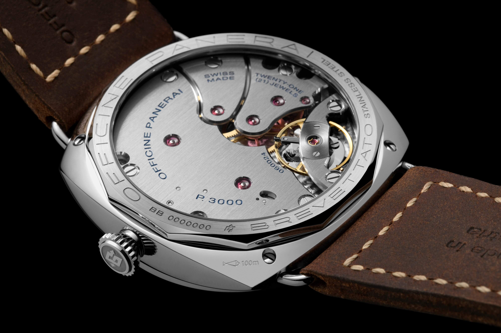
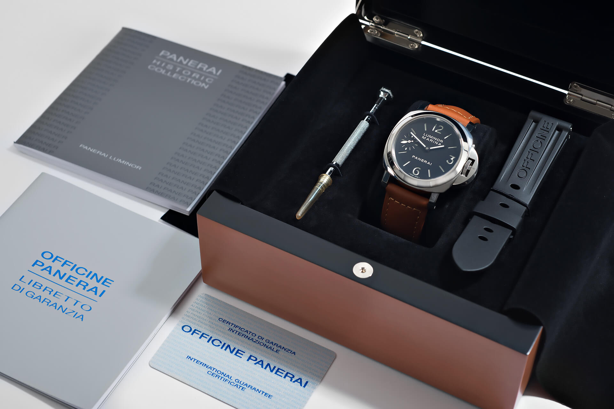
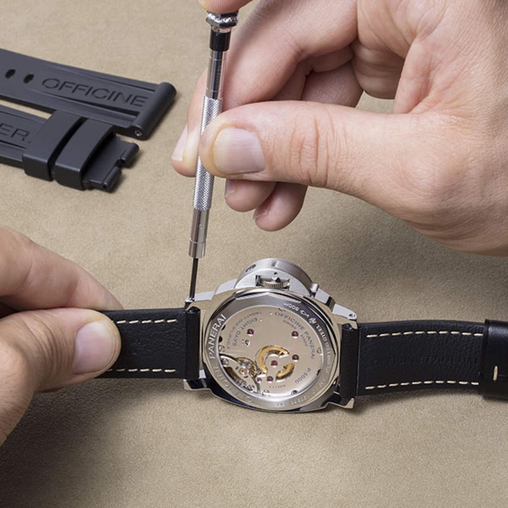
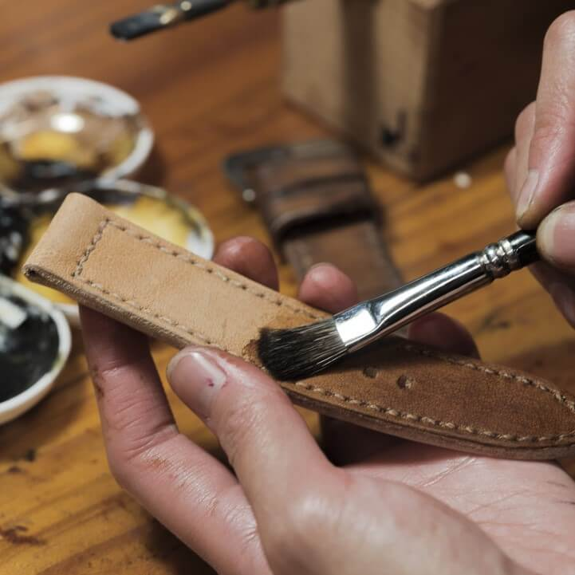
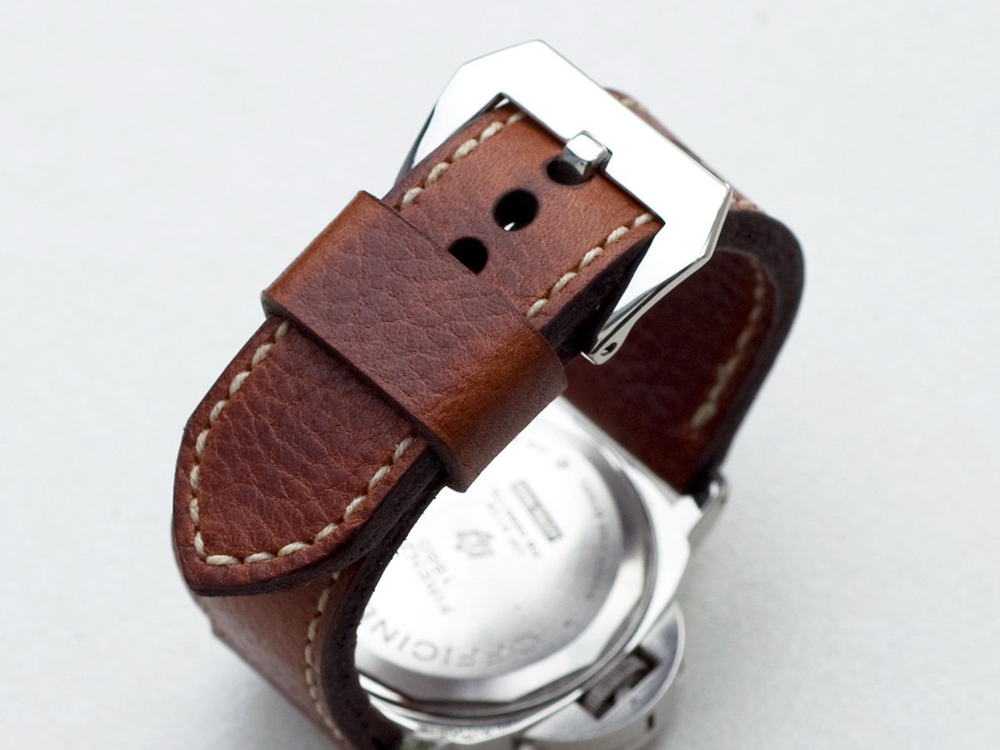

How Panerai and Paneristi Created the Modern Strap-Changing Culture
Some brands sell watches; others inspire movements. Officine Panerai falls firmly into the second category. Long before "customization" became a marketing buzzword, Panerai and company's passionate followers, the Paneristi, created a global phenomenon that forever changed how we interact with our watches: the strap-changing culture.
 Nenad Pantelic • September 13, 2025
Nenad Pantelic • September 13, 2025

What is remarkable is that by all accounts, this was not a calculated marketing campaign. Things just aligned perfectly. There was a watch with a unique design, a community born on the early internet, and a new generation of artisans who answered the call for custom straps.
The Perfect Canvas
Let's first write about the watch. Panerai's history as a supplier to the Royal Italian Navy meant its watches were designed as robust, functional tools, not delicate jewelry. The original Radiomir models from the 1930s were massive 47mm instruments strapped to the wrists of "frogmen" with long, water-resistant leather bands designed to fit over a diving suit. From the very beginning, the strap was considered as a modular and interchangeable component.
But the most critical element was Panerai's user-friendly design. Changing a strap on other luxury watches often required a trip to the jeweler, but Panerai provided its owners with a simple solution.
The Luminor's lugs featured a simple screw-bar system, and crucially, the brand began including a small screwdriver with its watches. This was a revolutionary gesture. An explicit invitation to experiment and personalize. And owners loved the new level of engagement they could have with their watches.


The Paneristi
If the watch was the star, the internet provided the stage for the star. In 2000, an English collector named Guy Verbist founded Paneristi.com, an online forum that quickly became the global hub for Panerai enthusiasts. In an era before social media, the forum was a place where fans shared photos, traded knowledge, and forged a collective identity: the Paneristi.
To be a "Panerista" meant more than just owning a watch. It signified membership in a global tribe with its own lexicon ("Pre-V," "Fiddy," "Destro") and real-world gatherings, from local meetups to the annual "P-Day." Within this tribe, a unique strap was a badge of honor, a way to showcase personal taste and signal one's dedication to the community.
What made this community unique was that Panerai listened. The brand's management recognized the passion of the Paneristi and began to collaborate with them, creating special editions exclusively for the forum's members.
This symbiotic relationship was groundbreaking at the time. The brand successfully turned consumers into "true fans" and brand ambassadors who, in turn, and completely organically boosted Panerai's meteoric rise.
An Industry of Artisans
The demand for unique straps gave birth to a global cottage industry of artisan strap makers. Many of the most celebrated makers were Paneristi themselves. They were enthusiasts who started by crafting straps for their own watches and later turned a passion into a profession. They understood the aesthetic and values of the community because they were part of it.
Pioneers like Kevin Rogers (Adeeos), who perfected the ammo strap, and brands like Di Stefano, Wotancraft, and Toshi Straps achieved legendary status. They offered everything from historically accurate recreations of 1940s frogmen straps to fully bespoke creations in exotic materials like sharkskin, alligator, and python.


The Ripple Effect Throughout the Industry
The Paneristi are widely credited with transforming strap changing from a niche activity into an essential part of the watch collecting hobby. Before them, the prevailing wisdom in luxury watch circles was that the original bracelet or strap was superior.
Communities for brands like Rolex and Omega were far more conservative. The Paneristi destroyed that notion, proving that a watch's identity could be fluid and personal.
This shift had an impact on the entire industry. Brands that once discouraged strap changing began to accept it. The widespread adoption of tool-less, quick-release strap systems by major players like IWC, Tudor, and Cartier is a direct legacy of the user-friendly principle Panerai pioneered decades ago.
A Deeper Connection
Here we are in 2025. Today, many of us have a drawer full of straps. We change them often. At least, I do. For me, the ritual of the daily swap creates a deeper, more tactile connection between the watch and me.
A huge shout-out and thank you to Panerai and all the Paneristi.